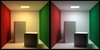

"artefact-metadata-hxa7241-www": {
"title": "P3 Whitebalancer",
"author": "Harrison Ainsworth",
"date": "2007-12-09",
"id": "urn:uuid:F7BE4575-B91A-49C8-9D91-DBCA5A46E987",
"type": "article",
"subtype": "text/html",
"wordcount": 163,
"hashsecure": "sha256:6982dd67b23775ffP3 Whitebalancer
a whitebalancer component for high-quality rendering
Description
Whitebalancer removes the color cast from an image.
This emulates the perceptual capability of ‘color-constancy’: it makes the colors look more like they did in the scene where the image was created.
It is a command-line application and a dynamic library, for Windows and Linux.
Application features:
- reads and writes PPM and RGBE/HDR
- reads and writes PNG and EXR — if you have the related libraries present
- allows full control of the P3WhiteBalancer library
Library features:
- float-triplet-pixel images accepted (linear, not gamma-corrected)
- HDR or LDR images accepted
- image colorspace and whitepoint specifiable
- original illuminant specifiable, or automatically estimated
- strength of color-shift adjustable
- fast enough for semi-interactive use
Images
|

Cornellbox, auto-
(20 KiB)
|
Church interior, auto-
(67 KiB)
|
{kind=link}
{kind=link}
Downloads
Version 1.2 (2007-12-04)
| 💻 p3whitebalancer12exe-win.zip | application and library - Windows (189 KiB) |
| 🐧 p3whitebalancer12exe-lin.tgz | application and library - Linux (x86) (79 KiB) |
| 📦 p3whitebalancer12src.zip | source code (180 KiB) |